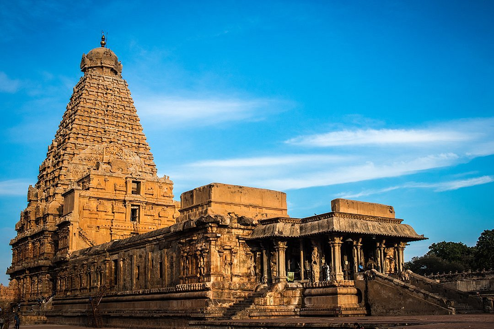
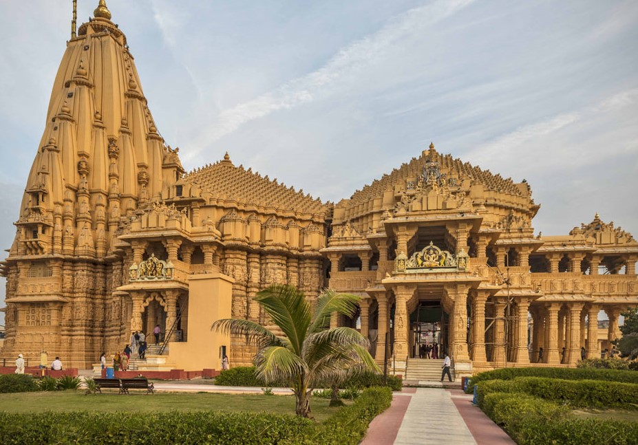
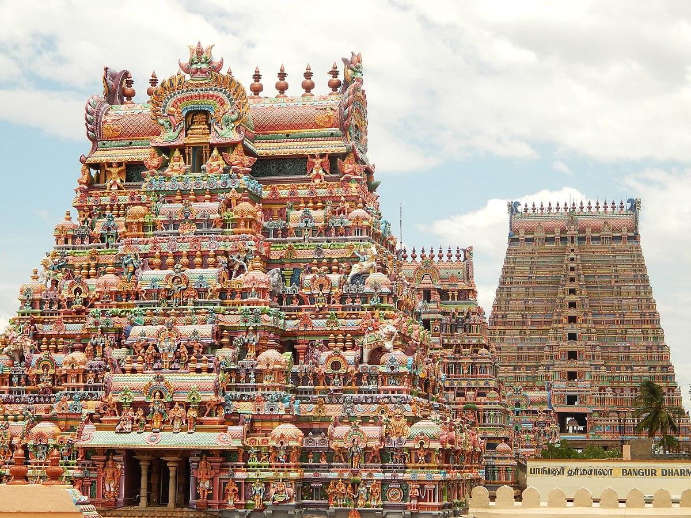

Famous Temples

Brihadishvara Temple
Brihadishvara Temple, is also called as Rajarajeshwaram, is a shaivite temple built in Chola architectural style, located on the south bank of the cauvery river in Tanjavur,Tamilnadu.

Kedarnath Temple
Kedarnath Temple, one of the twelve jyotirlinga f Shiva, located on the Garhwal Himalayan range near the mandakini river , in the state Uttarakhand.

Somanath Temple
Somanath Temple is the first jyotirlinga among the twelve jyotirlinga of Shiva ,its is located along the costline in Prabhas Patan,Veraval in Gujarat.

Ranganathaswamy Temple
Ranganathswamy temple is dedicated to lord Vishnu, constructed in the dravidian architectural style , located in Srirangam,Tiruchirapalli,Tamil Nadu.